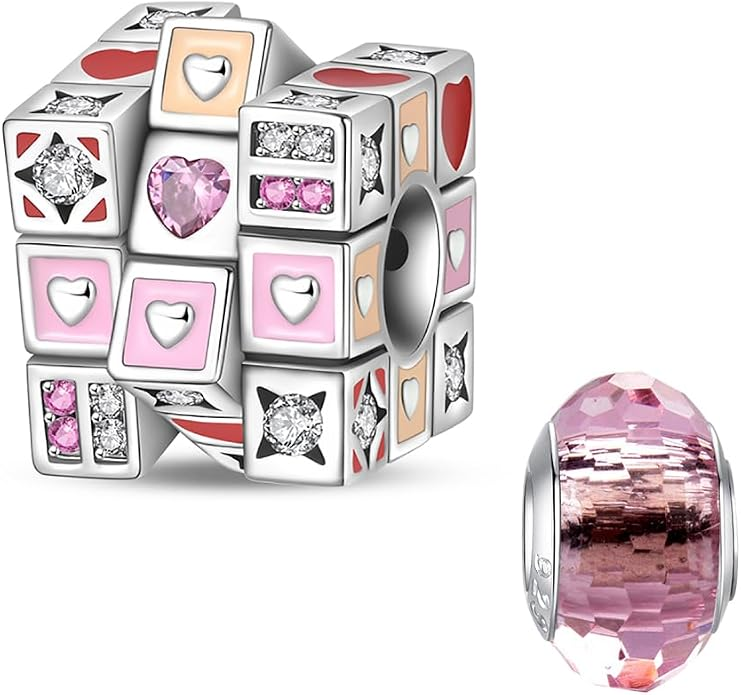
Charm de cubos con corazones y piedra rosa
Charm con diseño de cubos decorados con corazones y detalles en tonos rosas, ideal para personalizar tu pulsera con un estilo romántico y original.
Desde 14,47 €
Ver en Amazon#publicidad
Pequeños detalles, grandes historias.
Descubre nuestra selección de charms para representar momentos especiales, experiencias, viajes y aficiones. Encuentra diseños relacionados con celebraciones, destinos, actividades y hobbies para personalizar tu pulsera y crear una combinación que tenga un significado especial.

Charm con diseño de cubos decorados con corazones y detalles en tonos rosas, ideal para personalizar tu pulsera con un estilo romántico y original.
Desde 14,47 €
Ver en Amazon#publicidad
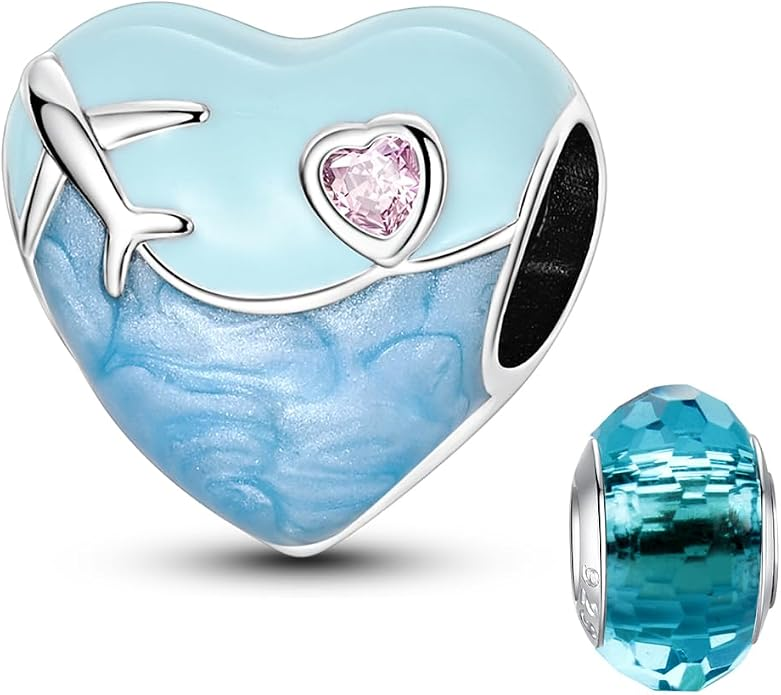
Charm con forma de corazón azul decorado con un avión plateado, ondas de agua y un pequeño corazón rosa. Su diseño combina elementos relacionados con los viajes y el mar, convirtiéndolo en una opción original para personalizar una pulsera de charms con una temática viajera.
Desde 14,56 €
Ver en Amazon#publicidad
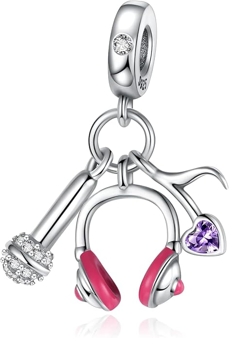
Charm con diseño de unos auriculares en color rosa, acompañado de un pequeño corazón morado y un detalle decorativo con piedras brillantes. Una opción original para personalizar una pulsera de charms y representar la afición por la música y los accesorios relacionados con ella.
Desde 13,15 €
Ver en Amazon#publicidad
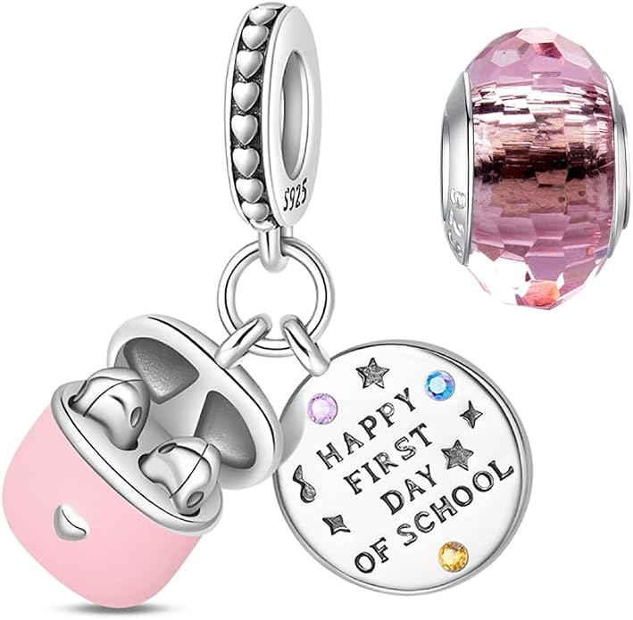
Charm inspirado en el primer día de colegio, con una campana y una placa circular decorada con el mensaje "Happy First Day of School". El diseño incorpora además estrellas y pequeñas piedras de colores, convirtiéndolo en un recuerdo especial para celebrar el comienzo de una nueva etapa escolar.
Desde 14,48 €
Ver en Amazon#publicidad
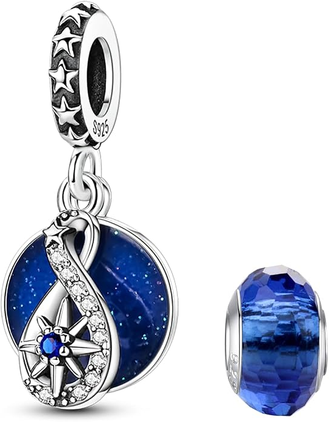
Charm con diseño de una brújula y rosa de los vientos sobre un fondo azul decorado con pequeños detalles brillantes. El conjunto incorpora además un elemento en forma de infinito con detalles de piedras, creando un diseño relacionado con los viajes, la aventura y la exploración para personalizar una pulsera de charms.
Desde 14,56 €
Ver en Amazon#publicidad
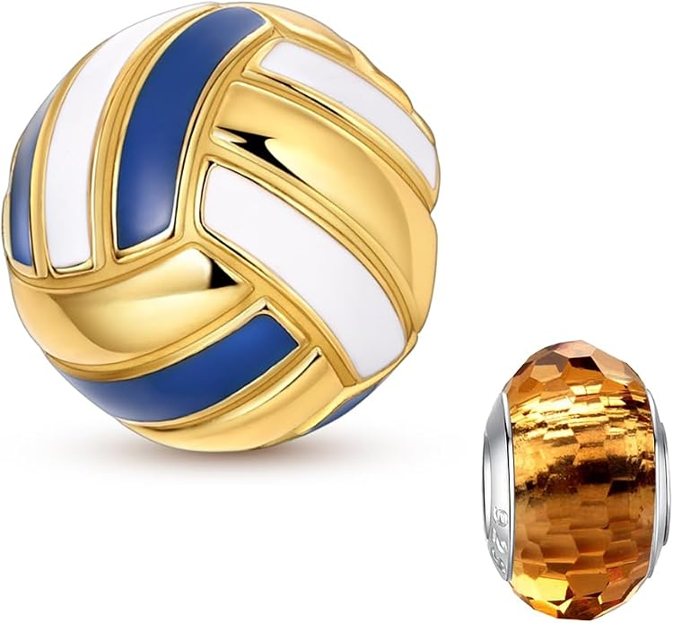
Charm con forma de balón de voleibol en tonos azul, blanco y dorado, inspirado en este deporte y su afición. Un diseño original para personalizar una pulsera de charms y llevar un detalle relacionado con el voleibol y el deporte.
Desde 14,56 €
Ver en Amazon#publicidad
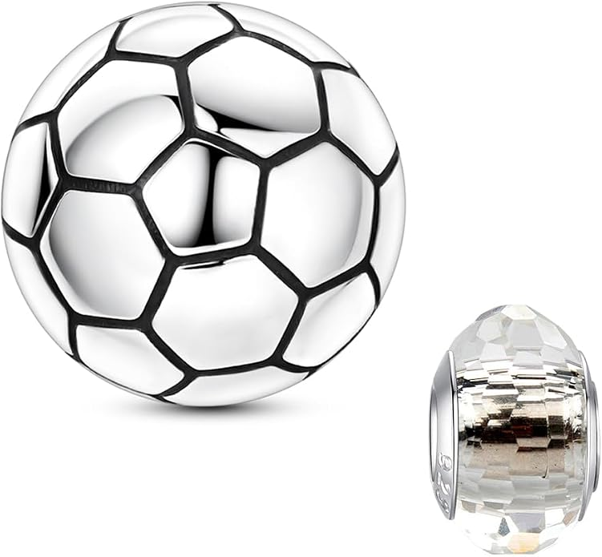
Charm con forma de balón de fútbol y diseño clásico en color blanco con paneles y detalles en negro. Una opción ideal para quienes disfrutan del fútbol y quieren personalizar su pulsera de charms con un detalle relacionado con su deporte favorito.
Desde 14,56 €
Ver en Amazon#publicidad
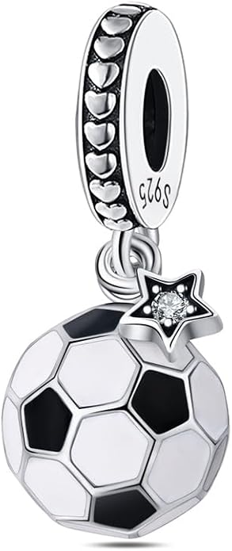
Charm con forma de balón de fútbol y diseño clásico de paneles en blanco y negro, acompañado en la parte superior por una estrella decorativa con una piedra brillante en el centro. Un diseño relacionado con el fútbol y el deporte, ideal para personalizar una pulsera de charms con un detalle especial.
Desde 16,99 €
Ver en Amazon#publicidad
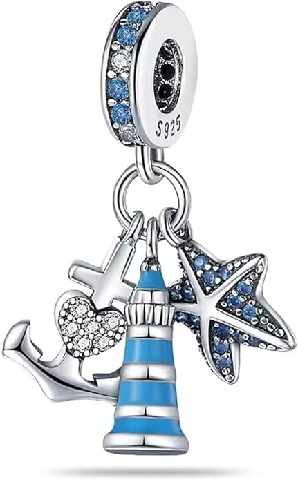
Charm de temática marina con un faro en tonos azul y blanco, acompañado de un ancla, una estrella de mar decorada con piedras azules y un pequeño corazón. Un diseño inspirado en el mar y los destinos costeros, ideal para personalizar una pulsera de charms y recordar viajes, vacaciones o lugares especiales.
Desde 17,88 €
Ver en Amazon#publicidad
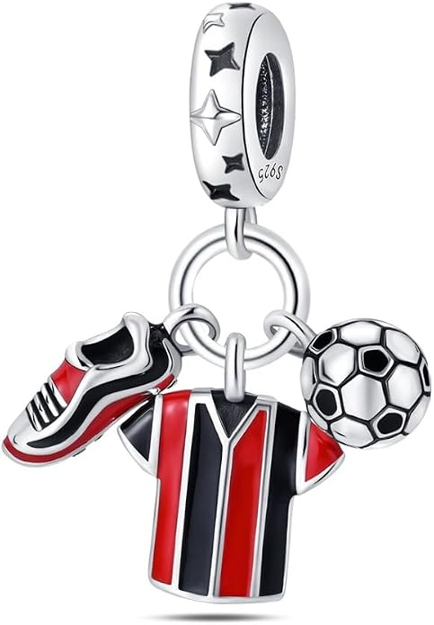
Charm de temática futbolística compuesto por una camiseta deportiva en tonos rojo, negro y blanco, una bota de fútbol y un balón. Un diseño ideal para quienes disfrutan del fútbol y quieren personalizar su pulsera de charms con un detalle relacionado con este deporte y su afición.
Desde 13,56 €
Ver en Amazon#publicidad
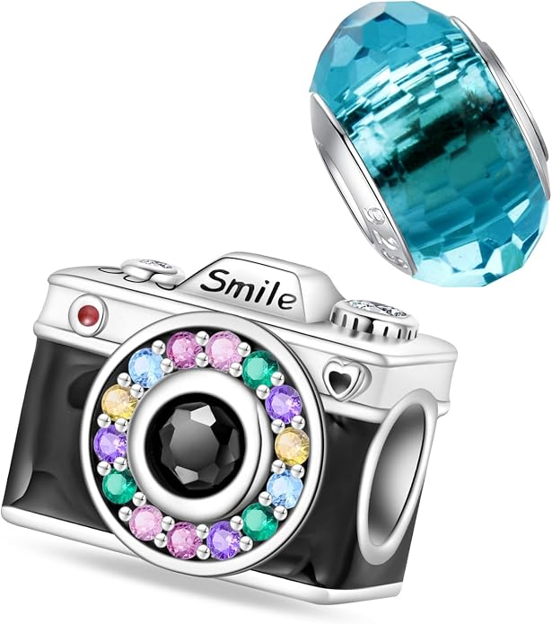
Charm con forma de cámara de fotos en tonos blanco y negro, con el mensaje "Smile" en la parte superior. El objetivo está decorado con piedras brillantes de diferentes colores y una piedra negra en el centro, creando un diseño original para quienes disfrutan de la fotografía y de guardar recuerdos especiales.
Desde 15,46 €
Ver en Amazon#publicidad
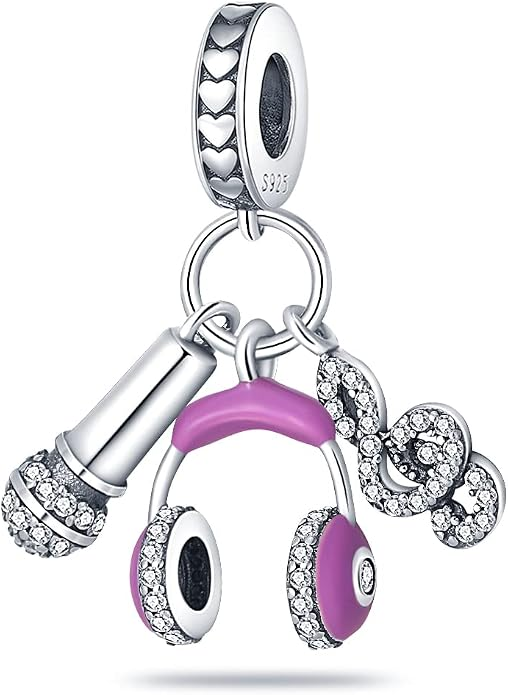
Charm inspirado en la música, con unos auriculares de diadema en tonos rosa y morado, acompañados de un pequeño micrófono y notas musicales decoradas con piedras brillantes. Un diseño original y llamativo, ideal para personalizar una pulsera de charms y representar la pasión por la música.
Desde 15,33 €
Ver en Amazon#publicidad
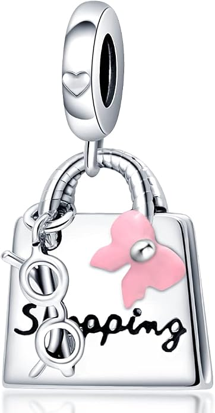
Charm con forma de bolso decorado con un lazo rosa, unas gafas de sol y el mensaje "Shopping". Un diseño divertido y original inspirado en las compras y la moda, ideal para personalizar una pulsera de charms y añadir un detalle relacionado con el estilo y los momentos de compras.
Desde 12,73 €
Ver en Amazon#publicidad
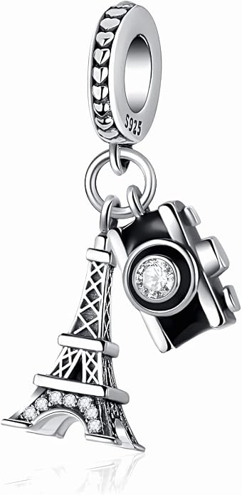
Charm inspirado en París, con una representación de la Torre Eiffel acompañada de una cámara de fotos decorada con una piedra brillante. Un diseño ideal para amantes de los viajes, la fotografía y la capital francesa, perfecto para personalizar una pulsera de charms con un recuerdo especial.
Desde 16,34 €
Ver en Amazon#publicidad
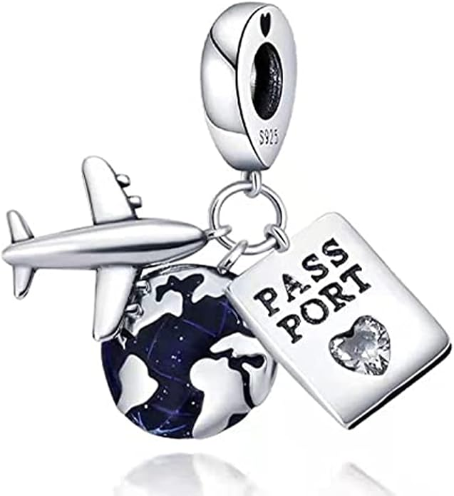
Charm inspirado en los viajes, con un avión, un pequeño globo terráqueo y una placa con el mensaje "PASS PORT" acompañada de un corazón. Un diseño original para amantes de los viajes y las aventuras, ideal para personalizar una pulsera de charms con un recuerdo relacionado con el mundo.
Desde 16,37 €
Ver en Amazon#publicidad
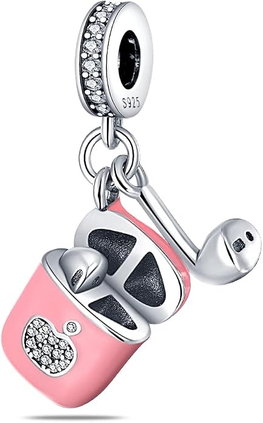
Charm inspirado en unos auriculares inalámbricos, representados junto a su estuche de carga en color rosa. El estuche incorpora un pequeño corazón decorado con piedras brillantes, creando un diseño moderno y original para personalizar una pulsera de charms.
Desde 16,37 €
Ver en Amazon#publicidad
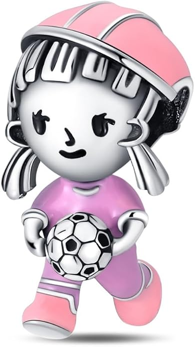
Charm con diseño de una joven futbolista vestida de rosa mientras juega con un balón de fútbol. Un diseño deportivo y original que representa la pasión por el fútbol femenino, ideal para personalizar una pulsera de charms y añadir un detalle relacionado con este deporte.
Desde 15,41 €
Ver en Amazon#publicidad
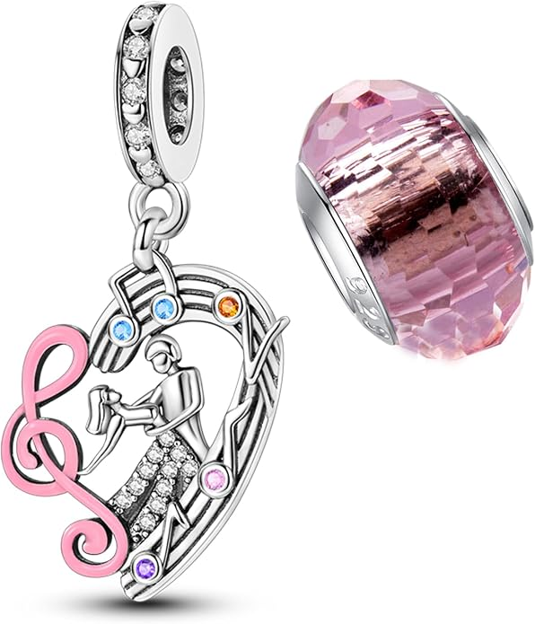
Charm inspirado en la música, con una clave de sol en color rosa y un instrumento de viento en el centro, acompañado de pequeñas piedras de colores y detalles brillantes. Un diseño original y elegante para quienes disfrutan de la música y quieren personalizar su pulsera de charms con un detalle musical.
Desde 8,94 €
Ver en Amazon#publicidad
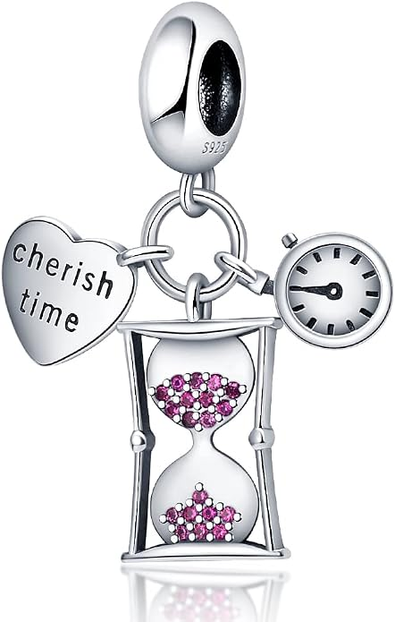
Charm inspirado en el paso del tiempo, con un reloj de arena decorado con pequeñas piedras rosas en forma de corazón, acompañado de un reloj y una placa con forma de corazón que lleva el mensaje "Cherish Time". Un diseño simbólico y original, ideal para personalizar una pulsera de charms y representar la importancia de disfrutar y valorar cada momento.
Desde 12,08 €
Ver en Amazon#publicidad
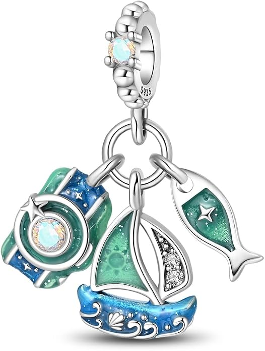
Charm inspirado en los viajes y la aventura, con un velero, una cámara y detalles decorativos en tonos azules y verdes. Un diseño ideal para amantes del mar, los viajes y la fotografía.
Desde 17,99 €
Ver en Amazon#publicidad
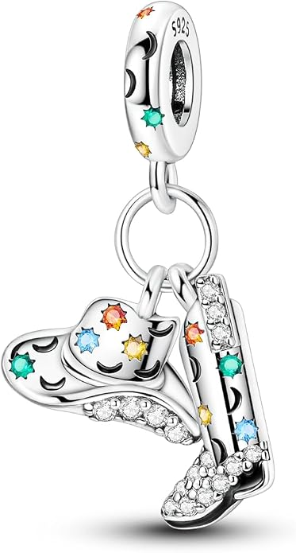
Charm inspirado en el estilo vaquero, con un sombrero y una bota de cowboy decorados con estrellas, lunas y detalles brillantes. Un diseño original para los amantes del estilo western.
Desde 13,99 €
Ver en Amazon#publicidad
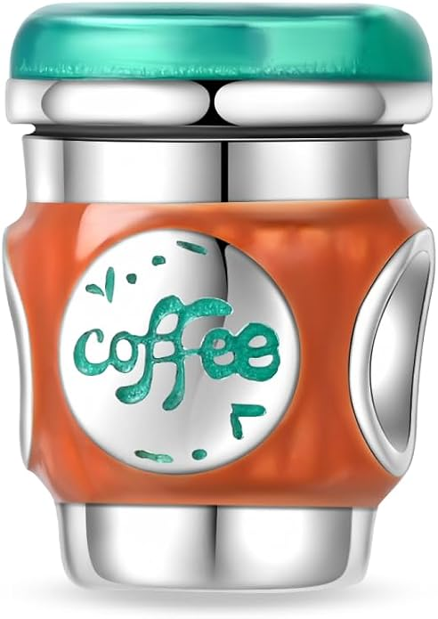
Charm con forma de taza de café, decorado en tonos naranja, verde y plateado, con la palabra “Coffee” en el frontal. Un diseño original para los amantes del café.
Desde 17,99 €
Ver en Amazon#publicidad
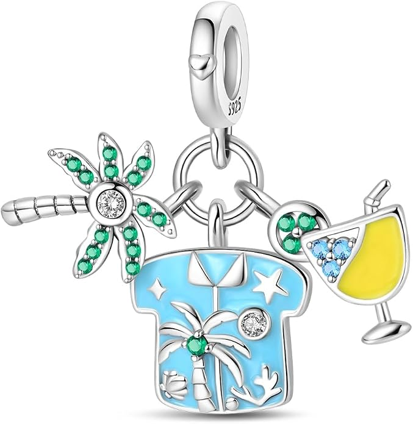
Charm inspirado en las vacaciones de verano, con una camiseta decorada con una palmera y motivos tropicales, acompañado de una bebida y una libélula con detalles brillantes. Un diseño perfecto para los amantes del verano y la playa.
Desde 13,99 €
Ver en Amazon#publicidad
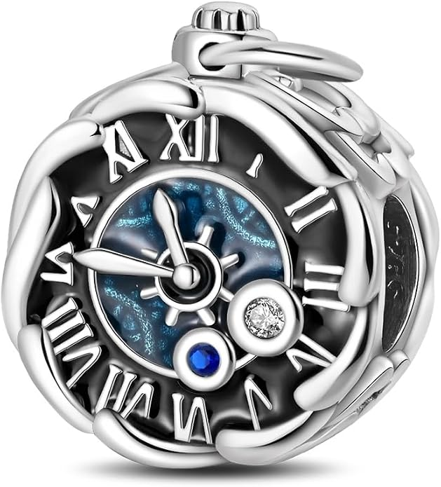
Charm con diseño de reloj despertador, números romanos, agujas y pequeños detalles brillantes. Una pieza original inspirada en el paso del tiempo y los recuerdos.
Desde 17,99 €
Ver en Amazon#publicidad
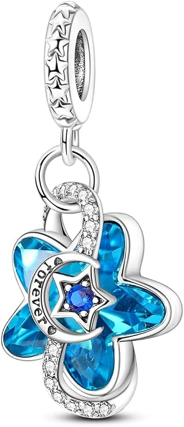
Charm con una flor azul de acabado brillante, decorada con una luna creciente, una estrella central y detalles de circonitas. Incluye el mensaje “Forever” como elemento destacado.
Desde 13,99 €
Ver en Amazon#publicidad
Las celebraciones pueden convertirse en recuerdos que merece la pena llevar contigo. Los charms para celebraciones permiten representar momentos importantes como cumpleaños, bodas, graduaciones, aniversarios y otras ocasiones especiales. Son una forma de personalizar una pulsera y asociarla a una fecha, una persona o un momento significativo.
Un charm relacionado con un cumpleaños puede convertirse en un pequeño recuerdo de una fecha especial. Puedes combinarlo con letras, iniciales, números u otros diseños para crear una pulsera personalizada y adaptada a la persona que recibe el regalo.
Las bodas y los aniversarios son ocasiones especialmente relacionadas con los recuerdos y los detalles personales. Los charms inspirados en estas celebraciones pueden formar parte de una pulsera que represente una relación, una fecha importante o un momento compartido.
Una graduación, un logro personal o cualquier otra celebración importante también puede quedar representada mediante un charm. Estos diseños permiten crear una pulsera vinculada a una etapa, un objetivo conseguido o un momento que quieras recordar.
Los viajes pueden inspirar recuerdos que permanecen durante mucho tiempo. Los charms de viajes permiten representar experiencias relacionadas con aviones, maletas, destinos, mapas, monumentos, playa y vacaciones, entre otros diseños.
Los diseños relacionados con aviones, maletas y mapas son una opción para quienes disfrutan descubriendo nuevos lugares. Puedes utilizarlos para representar un viaje concreto, una afición por viajar o simplemente el gusto por conocer diferentes destinos.
Algunos viajes están asociados a ciudades, países, monumentos o lugares especiales. Los charms inspirados en destinos y monumentos pueden ayudarte a crear una pulsera que reúna recuerdos de diferentes lugares y experiencias.
Los hobbies también pueden formar parte de una pulsera personalizada. Existen diferentes posibilidades relacionadas con música, deportes, fotografía, cocina, lectura, arte y otras actividades que forman parte de los gustos y aficiones de cada persona.
La música y el deporte son algunas de las aficiones que pueden representarse mediante pequeños detalles. Un charm relacionado con un instrumento, una actividad deportiva u otra afición puede ayudarte a incorporar tus intereses personales a tu pulsera.
La fotografía, la cocina y la lectura también pueden convertirse en inspiración para una pulsera. Estos diseños permiten representar actividades que forman parte del día a día y crear combinaciones relacionadas con los intereses personales de cada persona.
El arte y otros hobbies ofrecen muchas posibilidades para personalizar una pulsera. Puedes combinar diferentes diseños relacionados con tus actividades favoritas y crear una colección de charms que represente tu personalidad, tus intereses y tus experiencias.
Los charms de celebraciones, viajes y hobbies pueden combinarse con otras categorías para crear una pulsera diferente y personal. Puedes añadir una letra o inicial, un número, un mes, un diseño de horóscopo, un animal, un personaje o un charm relacionado con el amor.
Puedes encontrar diseños relacionados con cumpleaños, bodas, graduaciones, aniversarios y diferentes celebraciones especiales. La variedad dependerá de los productos disponibles.
La selección puede incluir diseños relacionados con aviones, maletas, mapas, destinos, monumentos, playa, vacaciones y otras experiencias relacionadas con los viajes.
Dependiendo de los productos disponibles, puedes encontrar diseños relacionados con música, deportes, fotografía, cocina, lectura, arte y otras aficiones.
Sí. Puedes combinar charms de celebraciones, viajes o hobbies con letras, números, meses, animales, personajes, diseños de amor y otras categorías para crear una pulsera personalizada.
Los productos seleccionados incluyen un enlace a Amazon donde puedes consultar el precio, la disponibilidad y las características concretas de cada modelo.
Sí. Los precios y la disponibilidad pueden variar en Amazon. Por ello, recomendamos comprobar siempre la información actualizada en Amazon antes de realizar una compra.